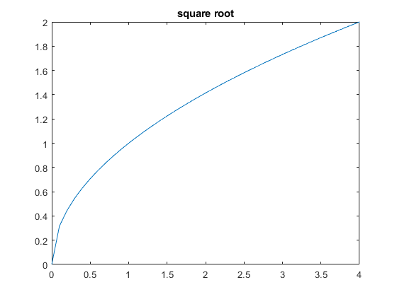

Contents
graph 01: square root
x = [0:0.1:4];
plot(x,sqrt(x))
title('square root')

graph 02: exponential function
x = [-2:0.5:5];
plot(x, exp(x));
title('exponential function');
graph 03: log10 function
x = [0.1:0.1:10];
plot(x, log10(x));
title('log10 function');
graph 04: log2 function
x = [0.1:0.1:10];
plot(x, log2(x));
title('log2 function');
graph 05: exponential base 10
x = [-1:0.1:2];
plot(x, 10.^x);
title('exponential base10');
graph 06: exponential base 2
x = [-1:0.1:2];
plot(x, 2.^x);
title('exponential base2');
graph 07: sine
x = [-2*pi: pi/100: 2*pi];
plot(x, sin(x));
title('sine')
graph 08: cosine
x = [-2*pi: pi/100: 2*pi];
plot(x, cos(x));
title('cosine');
graph 09: tangent
x = [-pi/2+0.01:0.01:pi/2-0.01];
plot(x, tan(x));
title('tangent');
graph 10: cotangent
x = [[-0.8:0.01:-0.01], [0.01:0.01:0.8]];
plot(x, cot(x));
title('cotangent');
graph 11: arcsine
x = [-1:0.01:1];
plot(x, asin(x));
title('arcsine');
graph 12: arccosine
x = [-1:0.01:1];
plot(x, acos(x));
title('arccosine');

graph 13: arctangent
x = [-10:0.01:10];
plot(x, atan(x));
title('arctangent');
graph 14: arccotangent
x = [[-0.8:0.01:-0.01], [0.01:0.01:0.8]];
plot(x, acot(x));
title('arccotangent')